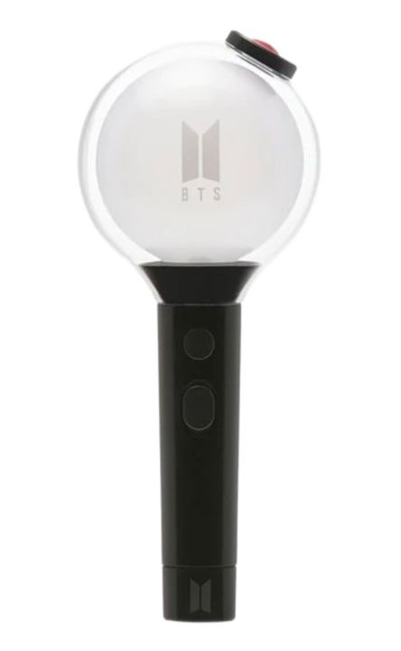
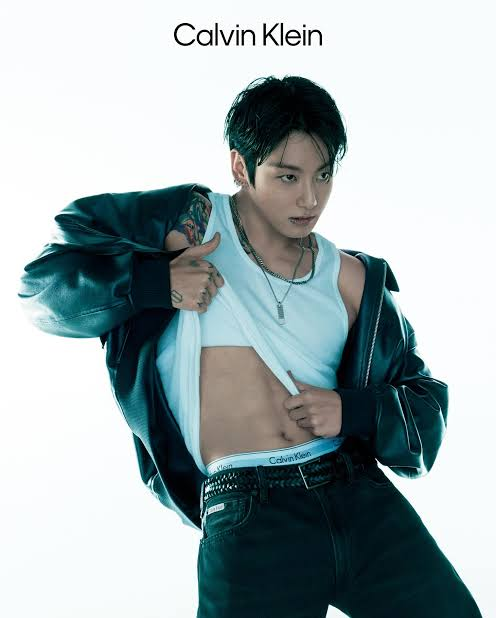

There is a culture to not just being a BTS fan but to any K-pop group
If you ever have the oppurtunity to visit Korea you will see many Ads all over the place with different K-pop groups advertising products and also showing debuts of any new groups as well. This shows how popular and how significant K-pop is to Korean Culture but it has also now a bigger reach Globally over the years.
Light Sticks

If you ever get the oppurtuinty to go to these concerts you will see most fans hold a stick, that is called a light stick. Most groups once they get some popularity they will have a custom light stick with there logo on it. The point of the light stick is it glows and people will wave it to the beat and there is different light modes which for some songs the idols will ask it to be changed to since it will match.

Product Ads
With k-pop idols being so popular naturally companies will reach out and ask them to advertise for them and they have. Many different companies will ask idols to promote makeup, clothes, even food and drinks. Jin from BTS actually did a brand deal with a can of tuna and even made a song about it called "Super Tuna".
Modeling
Naturally with K-pop Idols they will end up modeling for some companys while promoting clothes. Sometimes even after modeling some K-pop idols while be actors in K-dramas. As idols they will also promote makeup since all idols even including the guys wear makeup and even colored eye contacts to achieve certain looks that they want. Jungkook from BTS is a known Calvin Klein model and is seen on many posters showing there clothes.
Fan events
Before some K-pop groups get very big, to cater to current fans they will have fan meetups where people while get tickets to see them and get to talk to them for a second and they get to sign some stuff for you. You can find many videos of these meetups and you would expect chaos since its K-pop idols in a room with fans but it is very organized and there is a structure.
Merch
Merch, it is what all K-pop groups will have, either it being clothes, stickers, photocards, or anything with their name or names on it. Most fans will get as much merch as possible since for big groups like BTS they will be sold out quick.
Terms
- Bias - Someones favorite member of the group
- Bias Wrecker - Another member of the same group that is a close second and you can have more than one "Bias Wrecker"
- FMV- this term stands for "fan made videos" this is videos of a kpop memeber or the group itself edited to a song
- Edits- this is a much shorter verison of FMV's and are almost always clips of one memeber to a popular song
- Sasaeng - Is an obsessive stalker fan, this is not a good term to be called but it is still a term that is important to know
- Army - this is the name of the fan base for BTS and each group has a name for their fanbase